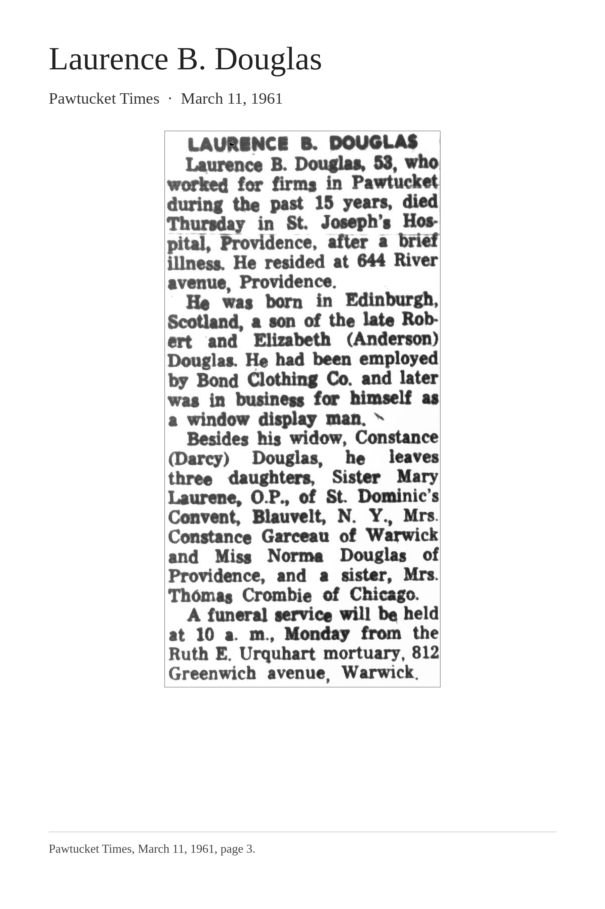

1961 obituary: Laurence B. Douglas
Pawtucket Times, March 11, 1961, page 3.

The entry is marked in red and highlighted.
What this document is
A newspaper obituary: the death notice printed in the Pawtucket Times two days after he died, giving his life, his work, his family and the funeral arrangements.
What it says
- Laurence B. Douglas, 53, of 644 River Avenue, Providence, died Thursday in St. Joseph’s Hospital after a brief illness.
- Born in Edinburgh, Scotland. Worked for Pawtucket firms for fifteen years; employed by Bond Clothing Co., later in business for himself as a window display man.
- Survived by his wife, Constance, three daughters, and a sister, Mrs. Thomas Crombie of Chicago.
- Funeral from the Ruth E. Urquhart mortuary, 812 Greenwich Avenue, Warwick.
Why it matters
The newspaper’s record of his life and his work.